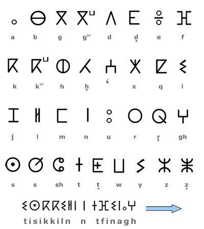

Les langues berbères et leurs symboles ont une grande place dans l'histoire et la culture de l'Afrique du Nord. Voici un aperçu des langues berbères et des symboles associés.
Les langues berbères, appelées Tamazight, sont une branche de la famille des langues afro-asiatiques. Elles sont parlées principalement dans les pays du Maghreb et dans les régions du Mali et du Niger. Voici quelques langues berbères les plus notables :
Les langues berbères peuvent utiliser différents alphabets :
Les symboliques berbères ont une signification culturelle et historique. Le symbole "ⵣ" représente l'homme libre (amazigh). Ce symbole est un emblème de l'identité berbère et est souvent utilisé dans le drapeau berbère. Chaque couleur symbolise une région géographique : le bleu symbolise la mer Méditerranée et l'océan Atlantique, le vert symbolise les montagnes et le jaune symbolise le désert.
Il y'a plusieurs artistes et politiciens connus au niveau internationel qui ont défendus la langue amazigh jusqu'au leurs dernier soufle tel que Matoub Lounes :
retournez a la page principale